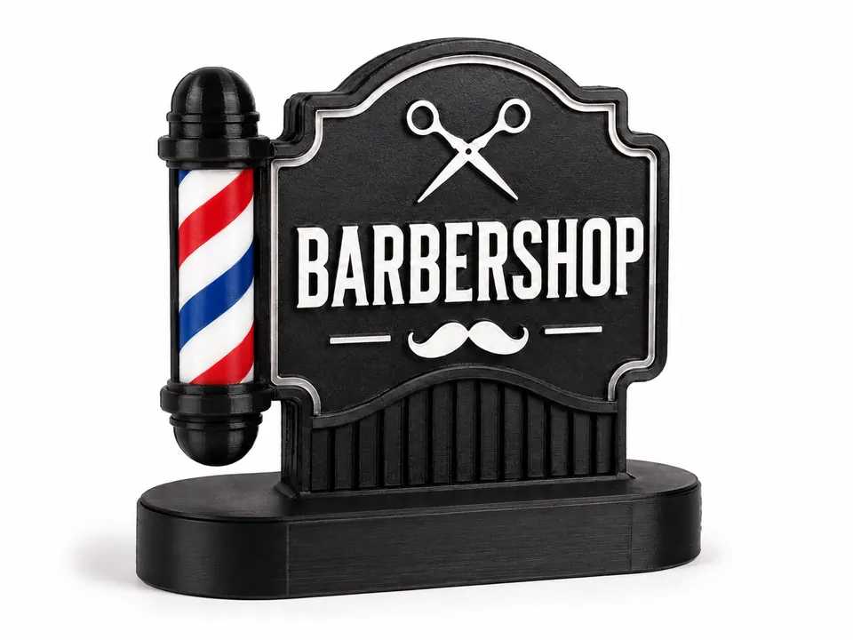
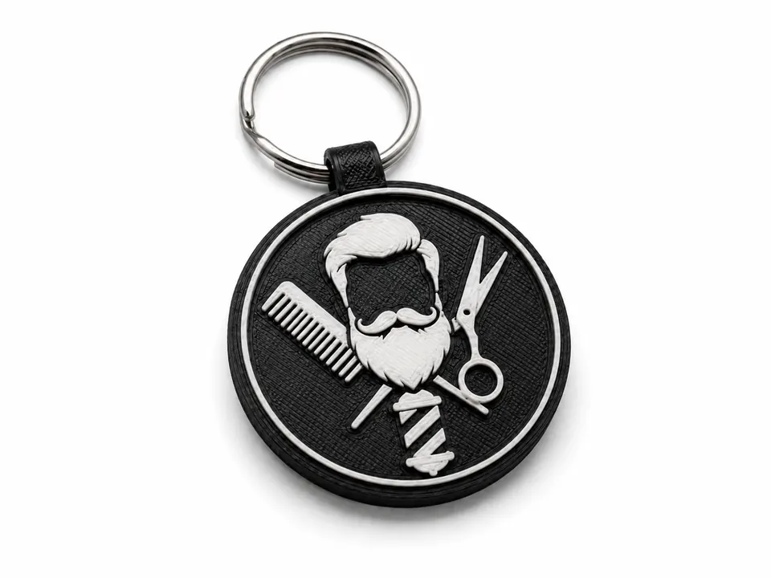
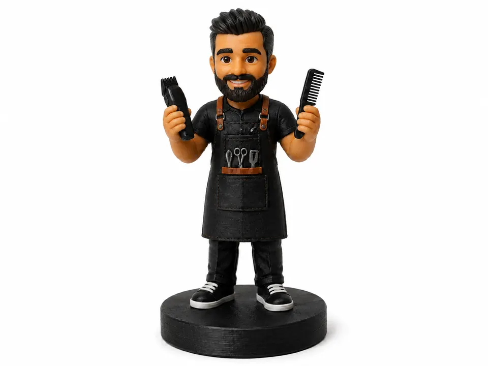
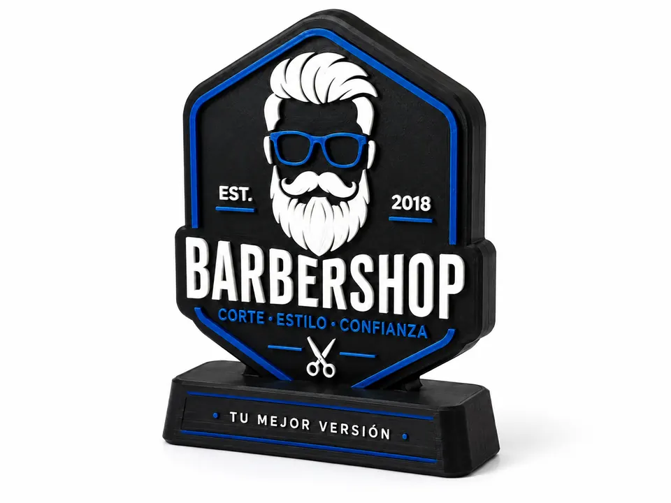

Ejemplo conceptualNEGOCIOS · BARBERÍAS
Barberías
La recepción y cada punto de contacto necesitan comunicar una identidad cuidada y reconocible desde el primer vistazo.
Agrupa piezas personalizadas que ayudan a reforzar la marca y ambientar la barbería.
- Letreros personalizados
- Llaveros con branding
- Figuras decorativas temáticas
- Placas o displays de marca
Estos productos son ejemplos y puntos de partida; cada propuesta puede adaptarse a la identidad y contexto del negocio.

Ejemplo conceptual
Ejemplo conceptual
Ejemplo conceptualEL PROBLEMA U OPORTUNIDAD
La recepción y cada punto de contacto necesitan comunicar una identidad cuidada y reconocible desde el primer vistazo.
APLICACIONES
- Letreros personalizados
- Llaveros con branding
- Figuras decorativas temáticas
- Placas o displays de marca
BENEFICIO Y SIGUIENTE PASO
Agrupa piezas personalizadas que ayudan a reforzar la marca y ambientar la barbería. Estos productos son ejemplos y puntos de partida; cada propuesta puede adaptarse a la identidad y contexto del negocio.
Cotizar una idea para mi barbería